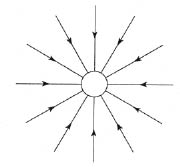
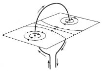
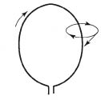
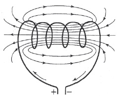
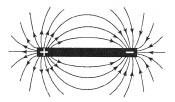
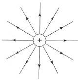
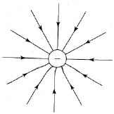
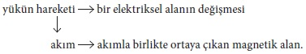

19. yüzyılın ikinci yarısında, fiziğe yeni ve devrimci düşünceler sokuldu. Bu düşünceler, mekanik görüşten farklı, yeni bir felsefi görüşe yol açtı. Faraday’ın, Maxwell’in ve Hertz’in yaptığı çalışmaların sonuçları, modern fiziğin gelişimine, gerçekliğin yeni bir tanımını veren yeni kavramların yaratılmasına vardı.
Şimdiki görevimiz, bu yeni kavramlarla bilimde ortaya çıkan değişikliği anlatmak ve bu kavramların nasıl yavaş yavaş açıklık ve güç kazandığını göstermektir. Kronolojik sıraya pek aldırmayıp, ilerlemenin izlediği yolu mantıklı olarak yeniden çizmeye çalışacağız.
Yeni kavramlar, elektrik görüngüleri ile ilgili olarak türedi, ama onları önce mekaniğin aracılığı ile tanıtmak daha kolaydır. İki taneciğin “birbirini çektiğini ve bu çekme kuvvetinin uzaklığın karesi ile orantılı olarak azaldığını biliyoruz. Bu olguyu yeni bir biçimde tasarlayabiliriz ve bunun yararını anlamak güçse de, öyle yapacağız. Şekildeki küçük çember, çeken bir cismi, söz gelimi Güneş’i göstermektedir. [Şekil-42] Gerçekte, şekil bir düzlem üzerine çizilmiş bir resim olarak değil, uzayda bir model gibi düşünülmelidir. Demek ki küçük çember uzayda bir küreyi, örneğin Güneş’i gösteriyor. Güneş’in yöresinde bir yere bırakılan, sınama cismi olarak adlandırılan bir cisim, iki cismin merkezlerini birleştiren doğru boyunca çekilecektir. Onun için, şeklimizdeki doğru çizgiler, sınama cisminin farklı konumları için Güneş’in çekme kuvvetinin yönünü göstermektedir. Bütün çizgilerdeki oklar, kuvvetin Güneş’e yöneldiğini belirtmektedir. Bunlar, gravitational alanın kuvvet çizgileridir. Bu, şimdilik, yalnızca bir addır ve üzerinde daha çok durmak için gerekçe yoktur. Şeklimizin, önemi daha sonra belirtilecek ayırıcı bir özelliği vardır. Kuvvet çizgileri, hiç madde bulunmayan boş uzayda saptanmaktadır. Şimdilik, bütün kuvvet çizgileri, ya da kısaca söylemek gerekirse, alan, yalnız alanı belirlenen bir kürenin yöresine bırakılan bir sınama cisminin nasıl davranacağını göstermektedir.

[Şekil-42]
Uzay modelimizin çizgileri kürenin yüzeyine hep diktir. Bir noktadan ve birbirlerini ıraksayarak çıktıkları için, kürenin yakınında sıktırlar ve küreden uzaklaştıkça seyrelirler. Küreden olan uzaklığı iki ya da üç katına çıkarırsak, o zaman uzay modelimizdeki –şekildeki değil– çizgilerin sıklığı, dört ya da dokuz kat daha az olacaktır. Demek ki, çizgiler ikili bir amaç içindir. Bir yandan, Güneş yuvarlağının yakınına bırakılan bir cismi etkileyen kuvvetin yönünü göstermektedirler. Öte yandan, uzaydaki kuvvet çizgilerinin sıklığı, kuvvetin uzaklıkla nasıl değiştiğini göstermektedir. Alanın resmi, doğru yorumlanırsa, gravitational kuvvetin yönünü ve onun uzaklığa bağlılığını gösterir. Gravitation yasası, kuvvetin sözle ya da matematiğin kesin ve özlü diliyle tanımlanmasından çıkarılabildiği gibi, böyle bir resimden de çıkarılabilir. Bu alan tasarısı –böyle diyeceğiz– açık ve ilginç görünebilir, ama gerçek bir ilerleme anlamına geldiğine inanmak için hiçbir gerekçe yoktur. Gravitation durumundaki yararlılığını kanıtlamak gerçekten güç olurdu. Kimileri, bu çizgileri yalnızca çizgi saymamayı, ve kuvvetin gerçek etkisinin onlardan geçtiğini düşünmeyi yararlı bulabilirler. Bu yapılabilir, ama o zaman, kuvvet çizgileri boyunca olan etkilerin çabukluğunun sonsuz büyük varsayılması gerekir! Newton yasasına göre, iki cisim arasındaki kuvvet yalnız uzaklığa bağlıdır; zaman hiç dikkate alınmaz. Kuvvet, bir cisimden öbürüne zaman gerektirmeden geçmelidir! Ancak, sonsuz çabuk hareket, sağduyulu bir kimse için pek anlamlı olmadığından, resmimizde bir modelden başka bir şey görmeye çalışmak hiçbir sonuç vermez.
Bununla birlikte, gravitation problemini hemen şimdi tartışmayı düşünmüyoruz. O, yalnız elektrik teorisindeki düşünme yöntemlerine benzeyen yöntemlerin açıklanmasını kolaylaştırmaya ve bu konuya bir giriş yapmaya yaradı.
Mekanik yorumlarımızda önemli güçlükler yaratan deneyi tartışarak işe başlayacağız. Çember biçimindeki bir telde dolaşan bir akım vardı. Çemberin ortasında mıknatıslı bir iğne bulunuyordu [bkz: şekil-31]. Akımın telden geçmeye başladığı anda, magnetik kutbu etkileyen ve tel ile kutbu birleştiren bütün çizgilere dik bir kuvvet ortaya çıktı. Bu kuvvet, bir çember üzerinde dolanan bir yükten ileri geldi ise, Rowland deneyinin gösterdiği gibi, yükün hızına bağlıdır. Bu deneysel olgular, bütün kuvvetlerin tanecikleri birleştiren çizgiler üzerinde etki göstermesi gerektiğini ve yalnız uzaklığa bağlı olabileceğini savunan felsefi görüşle çelişti.
Magnetik bir kutbu etkileyen bir akımın kuvvetini eksiksiz tanımlamak hiç de kolay değildir ve gerçekte gravitational kuvvetleri tanımlamaktan çok daha karmaşıktır. Bununla birlikte, gravitational kuvvetlerde yaptığımız gibi, etki gösteren kuvvetleri kafamızda tasarlayıp canlandırmaya çalışabiliriz. Sorumuz şu: Akım, yakınında bir yere konan bir magnetik kutbu hangi kuvvetle etkilemektedir? Bu kuvveti sözle tanımlamak epey güç olurdu. Matematiksel bir formül bile, karmaşık ve elverişsiz olurdu. En iyisi, etki gösteren kuvvet üzerine bildiğimiz her şeyi bir resimle, ya da daha iyisi, bir uzay modeli ile ve kuvvet çizgileri ile göstermektir. Magnetik bir kutbun ancak başka bir magnetik kutupla, bir kutup-çifti oluşturarak bulunması olgusu, biraz güçlük çıkarır. Bununla birlikte, yalnız akıma daha yakın olan kutbu etkileyen kuvvetin hesaba alınmasını gerektirecek uzunlukta olan mıknatıslı bir iğne her zaman düşünülebilir. Öbür kutup, etkili kuvvetin dikkate alınmayabileceği kadar uzaktır. Belirsizlikten kaçınmak için, tele yaklaştırılan kutbun artı kutup olduğunu söyleyeceğiz.
Artı magnetik kutbu etkileyen kuvvetin karakteri şekilden çıkarılabilir. [Şekil-43]
Önce, telin yanında, yüksek gerilimden alçak gerilime doğru, akımın yönünü gösteren bir ok gözümüze çarpıyor. Bütün öbür çizgiler, bu akımın belirli bir düzlem üzerinde oluştuğu kuvvet çizgileridir. Bunlar, gereği gibi çizilirse, akımın belirli bir artı magnetik kutba etkisini gösteren kuvvet vektörünün yönünü olduğu kadar bu vektörün uzunluğunu da belirtirler. Bildiğimiz gibi, kuvvet bir vektördür ve onu belirlememiz için, uzunluğunu olduğu gibi yönünü de bilmemiz gerekir. Bir kutbu etkileyen kuvvetin yönü bizi özellikle ilgilendiriyor. Sorumuz şu: Kuvvetin uzayın herhangi bir noktasındaki yönünü bu resimden nasıl çıkarabiliriz?

[Şekil-43]
Böyle bir modelden kuvvetin yönünü çıkarmak, kuvvet çizgilerinin doğru çizgiler olduğu eski örneğimizdeki gibi kolay değildir. Şekilde bu işlemi aydınlatmak için yalnız bir kuvvet çizgisi çizilmiştir. [Şekil-44] Kuvvet vektörü, görüldüğü gibi, kuvvet çizgisine teğet konumdadır. Kuvvet vektörünün oku ve kuvvet çizgisinin okları aynı yönü göstermektedir. Demek ki, bu, kuvvetin o noktada magnetik kutbu etkilediği yöndür. İyi bir şekil, ya da tersine iyi bir model de, herhangi bir noktadaki kuvvet vektörünün uzunluğu üzerine bize bir şeyler bildirir. Bu vektör, çizgilerin daha sık olduğu yerde, yani telin yakınında daha uzun ve çizgilerin daha az sık olduğu yerde, yani telin uzağında daha kısa olmalıdır.

[Şekil-44]
Böylece, kuvvet çizgileri, ya da başka bir söyleyişle, alan, uzaydaki herhangi bir noktada magnetik bir kutbu etkileyen kuvveti belirlememizi sağlar. Bu, şimdilik, alanı böyle ayrıntılı çizmemiz için biricik özürdür. Artık alanın ne demek olduğunu bildiğimize göre, akımın kuvvet çizgilerini çok daha derin bir ilgi ile inceleyeceğiz. Bu çizgiler, telin bulunduğu düzleme dik olan düzlemde bulunan ve teli kuşatan çemberlerdir. Kuvvetin karakterini şekilden okuyarak şu sonuca bir daha varırız: Kuvvet, tel ile kutbu birleştiren bütün çizgilere dik yönde etki gösterir; çünkü çemberin teğeti, çemberin yarıçapına her zaman diktir. Etkili kuvvetler üzerine bildiklerimizin hepsi, çizilen bu alan şeklinde özetlenebilir. Etkili kuvvetleri kolay bir yoldan göstermek için, alan kavramını, akım kavramı ile magnetik kutup kavramı arasına koyuyoruz.
Her akım, magnetik bir alanla birlikte ortaya çıkar, yani, içinden akım geçen bir telin yanına konan magnetik kutbu her zaman bir kuvvet etkiler. Bu arada, bu özelliğin, akımın varlığını ortaya çıkarmamızı sağlayan kullanışlı aygıtlar yapmamızı sağladığını söyleyebiliriz. Magnetik kuvvetlerin karakterini bir akımın alan modelinden çıkarmayı öğrendikten sonra, magnetik kuvvetlerin uzayın herhangi bir noktasındaki etkisini göstermek için hep içinden akım geçen teli kuşatan alanın resmini çizeceğiz. Birinci örneğimiz sarmal makaradır (bobin, solenoid). Bu, gerçekte, şekilde gösterildiği gibi, bir tel kangalıdır. [Şekil-45] Amacımız, bir makaradan geçen akımla birlikte ortaya çıkan magnetik alan üzerine öğrenebileceğimiz her şeyi deneyle öğrenmek ve bu bilgiyi bir alan modelinde birleştirmektir. Şekil, vardığımız sonuçları göstermektedir. Eğri kuvvet çizgileri kapalıdır ve makarayı bir akımın magnetik alanına özgü bir biçimde kuşatmaktadır.

[Şekil-45]
Bir mıknatıs çubuğunun alanı da, akımınki gibi gösterilebilir. Şekil bunu göstermektedir. [Şekil-46] Kuvvet çizgileri, artı kutuptan eksi kutba yönelmiştir. Kuvvet vektörü, her zaman kuvvet çizgisinin teğeti üzerindedir ve kutupların yakınında en uzundur; çünkü çizgilerin en sık olduğu yerler oralarıdır. Kuvvet vektörü, mıknatısın bir artı magnetik kutba etkisini göstermektedir. Bu durumda, alanın “kaynağı” akım değildir, mıknatıstır.

[Şekil-46]
Son iki şeklimiz dikkatle karşılaştırılmalıdır. Birincisinde bir makaradan geçen akımın magnetik alanı; ikincisinde ise, bir mıknatıs çubuğunun alanı gösterilmektedir. Makarayı da, mıknatıs çubuğunu da görmezlikten gelelim ve yalnız çevrelerindeki alanı inceleyelim. İkisinin de tümüyle aynı karakterde olduğunu çabucak fark ederiz; her iki durumda da, kuvvet çizgileri, makaranın ya da mıknatıs çubuğunun bir ucundan çıkıp öbür ucuna gitmektedir.
Alan tanımlaması ilk meyvelerini veriyor! Bir makaradan geçen akım ile bir mıknatıs çubuğu arasında yakın herhangi bir benzerlik görmek, çizdiğimiz alan şekli bunu açığa vurmasaydı, epey güç olurdu.
Alan kavramı şimdi çok daha çetin bir sınamadan geçirilebilir. Alanın etki gösteren kuvvetlerin yeni bir anlatımından başka bir şey olup olmadığını çabucak göreceğiz. Şöyle düşünebilirdik: Varsayalım ki alan, kendi kaynağının belirlediği bütün etkileri eşsiz bir biçimde tanımlıyor. Bu yalnızca bir varsayımdır, gerçek olsaydı, şu anlama gelirdi: Bir makara ile bir mıknatıs çubuğunun alanları aynı ise, onların bütün etkileri de aynı olmalıdır. Elektrik akımı taşıyan iki makara, iki mıknatıs çubuğu gibi davranmalıdır; tıpkı mıknatıs çubukları gibi, ilişkin (relative) konumlarına göre, birbirini çekmeli ya da itmelidir. Bu, bir makara ile bir mıknatıs çubuğu tıpkı iki mıknatıs çubuğu gibi birbirini çeker ya da iter demek olurdu. Sözün kısası bu, içinden akım geçen bir makaranın ve uygun bir mıknatıs çubuğunun etkileri aynıdır; çünkü onlardan sorumlu olan yalnızca alandır ve alan, her iki durumda da, aynı karakterdedir, demek olurdu. Deney, bu varsayımımızı tümüyle doğrular!
Alan kavramı olmadan bu olguları bulmak ne kadar güç olurdu! İçinden akım geçen bir tel ile bir magnetik kutup arasında etki gösteren bir kuvvetin anlatımı çok karmaşıktır. İki makara bulunması durumunda, iki akımın birbirini etkilediği kuvvetleri incelemeliyiz. Ama bunu alanın yardımı ile yaparsak, makaranın alanı ile mıknatıs çubuğunun alanı arasındaki benzerlik görüldüğü anda, bu etkilerin karakteri gözümüze çarpar.
Artık alana eskisinden daha anlamlı bir şey gözü ile bakmaya hakkımız vardır. Görüngülerin tanımı için gerekli görünen, yalnız alanın özellikleridir; kaynakların hiç önemi yoktur. Alan kavramı, yeni deneysel olgulara vararak, kendi önemini açığa vurmaktadır.
Alan, çok yararlı bir kavram olduğunu ortaya koyuyor. Alan, etkili kuvvetleri tanımlamak amacı ile, kaynakla mıknatıslı iğne arasına yerleştirilmiş bir şey olarak ortaya çıkmıştı. Akımın bütün etkilerini gerçekleştiren bir “aracı” olarak düşünülüyordu. Oysa şimdi, bu aracı da, yasaları basit, açık, kolay anlaşılan bir dile çeviren bir yorumcu gibi iş görmektedir.
Alan tanımının ilk başarısı, akımların, mıknatısların ve yüklerin bütün etkilerini dolaylı olarak, yani, alandan bir yorumcu gibi yararlanılarak ele almanın elverişli olabileceğini düşündürmektedir. Alan, hep akımla birlikte ortaya çıkan bir şey sayılabilir. Alan, varlığını sınamak için mıknatıslı bir iğne bulunmasa bile vardır. Bu yeni ipucunu tutarlı olarak izleyelim.
Yüklü bir iletkenin alanı, gravitational alan ya da bir akımın ya da mıknatısın alanı gibi gösterilebilir. Gene yalnız en basit durumu alalım. Artı yüklü bir kürenin alanını çizmek için, yüklü kürenin, alanın kaynağının yakınına bırakılan artı yüklü ve küçük bir sınama cismini hangi kuvvetlerin etkilediğini araştırmalıyız. Gerçekte, eksi ya da artı yüklü bir sınama cismi kullanmamızın hiç önemi yoktur. Ancak, kuvvet çizgileri oklarının hangi yönü göstereceği konusunda anlaşmalıyız. Model [Şekil-47], Coulomb yasası ile Newton yasası arasındaki benzerlikten dolayı, gravitational alan modeline [bkz: Şekil-42] benzemektedir.

[Şekil-47]
İki model arasındaki biricik fark, okların karşıt yönleri göstermesidir. Gerçekten, burada iki artı yük birbirini itmekte ve iki kütle birbirini çekmektedir. Bununla birlikte, eksi yüklü bir kürenin alanı, bir gravitational alan ile özdeştir; çünkü alanın kaynağı artı yüklü küçük sınama cismini çekmektedir. [Şekil-48]

[Şekil-48]
Elektrik kutupları ve magnetik kutuplar durgunsa, aralarında hiçbir karşılıklı-etki yoktur; birbirlerini çekmezler ve itmezler. Aynı olguyu alan dili ile anlatmak isteseydik, şöyle diyebilirdik: Bir durgun-elektriksel (elektrostatik) alan, bir durgun-magnetik (magnetostatik) alanı etkilemez, bunun tersi de doğrudur. “Durgun alan”, zamanla değişmeyen alan demektir. Mıknatıslar ve yükler, hiçbir dış kuvvetin etkisinde kalmazlarsa, birbirlerinin yanında durgun olarak sonsuzluğa dek kalırlar. Durgun-elektriksel, durgun-magnetik ve gravitational alanlar, üçü de, farklı karakterdedir. Birbirine karışmazlar; her biri, öbürlerinden zarar görmeden, olduğu gibi kalır.
Şimdiye dek durgun olan elektrikli küreye dönelim ve onun bir dış kuvvetin etkisi ile hareket etmeye başladığını varsayalım. Yüklü küre hareket ediyor. Bu, alan dilinde şu anlama gelir: Elektrik yükünün alanı zamanla değişmektedir. Ama bu yüklü kürenin hareketi, daha önce Rowland deneyinde öğrendiğimiz gibi, bir akıma eşdeğerdir. Bundan başka, her akıma bir magnetik alan eşlik eder. Düşünüşümüz şöyle zincirlenmektedir:

Bundan dolayı şu sonuca varıyoruz: Bir yükün hareketinden ileri gelen bir elektriksel alan değişikliğine, her zaman bir magnetik alan eşlik eder.
Vardığımız sonuç, Oersted deneyine dayanmaktadır, ama kapsamı daha geniştir. Zamanla değişen bir elektriksel alanın magnetik bir alanla birlikte ortaya çıkmasını, tartışmamızı ilerletmemiz için zorunlu kılmaktadır.
Yük durgun olduğu sürece, yalnız durgun bir elektriksel alan vardır. Ama yük hareket etmeye başlar başlamaz, magnetik bir alan ortaya çıkar. Bundan daha çoğunu da söyleyebiliriz: Yük daha büyük olur ve daha hızlı hareket ederse, yükün hareketi ile yaratılan magnetik alan da daha kuvvetli olacaktır. Bu da Rowland deneyinin sonuçlarından biridir. Alan dilini bir daha kullanarak şöyle diyebiliriz: Elektriksel alan ne kadar çabuk değişirse, onunla birlikte ortaya çıkan magnetik alan da o kadar kuvvetli olur.
Burada, akışkanlar öğretisinin mekanik görüşe göre yorumladığı o bilinen olguları yeni alan diline aktarmaya çalıştık. Kullandığımız bu yeni dilin ne kadar açık, öğretici ve verimli olduğunu daha sonra göreceğiz.